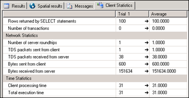

Does SQL Azure have Allure?
- date
2010-03-26 15:10
- author
admin
- category
opinion, sql server 2008
- tags
azure, cloud, geodatabase, sqlserver
- slug
does-sql-azure-have-allure
- status
published
 I love SQL Server 2008 spatial functionality. Not only because it has effectively killed off the middle-man GIS database software, but it even sticks to OGC standards allowing the same data and tables to be used in nearly all GIS software. However I have some reservations about the use of SQL Azure for GIS applications.
FAQ
How is SQL Azure Database different from working with a hoster using SQL Server?
Developers do not have to install, setup, patch or manage any software. High Availability and fault tolerance is built-in and no physical administration of hardware, storage or servers is required.
If you have a good hosting solution then the same benefits apply (well maybe not the “self-healing” also mentioned). The only real difference I can tell is that you pay a lot more, to be able to scale more easily. Its unlikely your Local Planning Mapping system is suddenly going to need to scale up to meet the expectations of millions of new users, no matter how great the system looks.
Update: Many thanks to David Chou for his clarifications on this - see comments below. In essence a SQL Azure database uses three replicas of your database with a layer on top that makes it appear to the application and user as a single instance. It is this new architecture that allows for scalability, and the self-healing (which still makes me think of Tekken’s Yoshimitsu).
Windows Azure and SQL Azure SLAs are independent of our on-premises Microsoft licensing agreements.
So if you do plan to continue standard “earth” development, you’ll still be paying SQL Server licences. For most government departments and large businesses there will always be some data that needs to be stored locally.
For Developers
Currently you can’t bring your existing on-premises Windows Server, SQL Server to Windows Azure, SQL Azure.
So it doesn’t seem possible to develop database applications locally and then upload all your views, stored procedures, functions and data in one go to Azure. It appears this only applies to the server software (see comments) - I’d imagine Enterprise level funcitonality such as mirroring or replication. The actual tables, stored procedures, and views will be fine to import.
SQL Server Management Studio will be able to access the online databases, but I would be interested to see how quickly a result set from a query would be returned. Would this data be returned locally and slowly, or would it work in a similar way to Remote Desktop by returning images from the server?
Cheque Please
The pricing structure is as follows:
Web Edition: Up to 1 GB relational database = $9.99 / month
Business Edition: Up to 10 GB relational database = $99.99 / month
Data transfers = $0.10 in / $0.15 out / GB - ($0.30 in / $0.45 out / GB in Asia)*
I’ve just completed a GIS project using SQL Server 2008, with around 60 different layers. The database is around 15 GB (this stored procedure returns disk space on a table by table basis). Uploading this data would be cheap enough at only $1.50, but would take hours. It was far easier to go round to the hosts with an external hard-drive, than upload from our network.
Where things get scary for a GIS developer is considering the data transfers out of a system as soon as the Microsoft spatial data types get involved.
The amount amount of bytes sent over the network in SQL Server for each query can be viewed using Client Statistics. Selecting 100 records from one of my tables resulted in 14 KB of data transfer. Selecting 100 records and their associated polygons resulted *in over 10 times more traffic* at 151 KB (here’s an online calculator for bit/kilobyte conversions).
Whilst I presume it is possible to set up a WMS server such as MapServer in Azure, it is unclear whether the “data out” costs apply to data that leaves the cloud or to any data that leaves the database (thanks to Ed Katibah for more details - charges only apply to data leaving Azure sub-region (Western Europe is a sub-region). In this second scenario it could well be game over. It is easy to imagine spiralling costs if you wish to display a few dynamic vector layers, and the database takes a hit on every user’s zoom or pan.
It’s (not) all about the Data(base)
The target market for SQL Azure in GIS however may not be individual applications, but rather business to business spatial services. Datasets used for geolocation and navigation could be stored in one place with an API that could then be called by any number of web applications. These “clients” could then be charged a premium on top of Azure’s costs for the additional services. Heavy use of results caching would mitigate the price of data transfer.
Unfortunatley for Microsoft it appears once again Google already has a big chunk of this (spatial) market wrapped up. For free, or $10,000 if charging for your service. Another example is James Fee’s WeoGeo. I presume by James’s quote about getting your ducks in a row his is clearly a business model that could benefit from SQL Azure. Both examples differ from the SQL Azure model of selling database services in that they both provide *data* as part of a cloud solution.
There are still many unknowns on how this will develop over time, and who will benefit from Azure. Its nice to know the spatial functionality is out there in the cloud, but for the majority of web mapping applications the risk of sky-high costs may keep it there. Case studies and early-adopter’s experiences will hopefully help paint a clearer picture. Microsoft’s main competitor could well be Microsoft. SQL Server 2008 Express is free (however with a 4GB limit), and includes both spatial functionality and Reporting Services. If you need to scale up it seems simpler to change your licence rather than your entire mindset.
- orphan
Comments
1. David **
I am using SIS to automate stuff here in Japan. My company, or rather my division, nearly lives entirely off programming for the SIS API.
I only just started and find it a bit of a nightmare because the API is really unintuitive and the documentation is minimal to say the least (I rely on the online documentation though…). And the thing with having to work with named lists is a big pain in the backside as you say!
One thing about the FindOverlayByName() function you posted above. I have been using this method too, primarily because it was in the code I inherited. I just realised today that this function will break if any one of your overlays has an index greater than the number of indices… Can you think of any way to overcome this?
ReplyAdd Comment